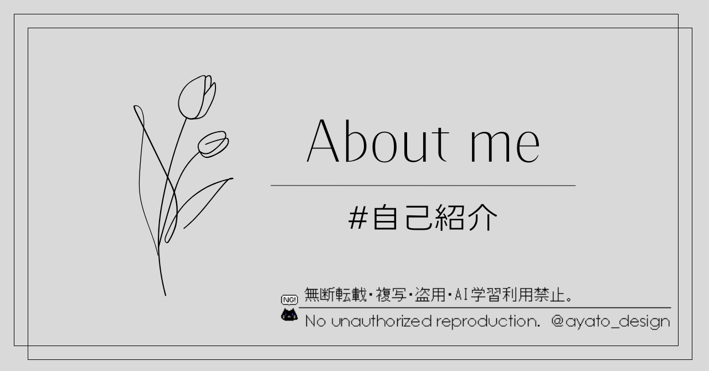
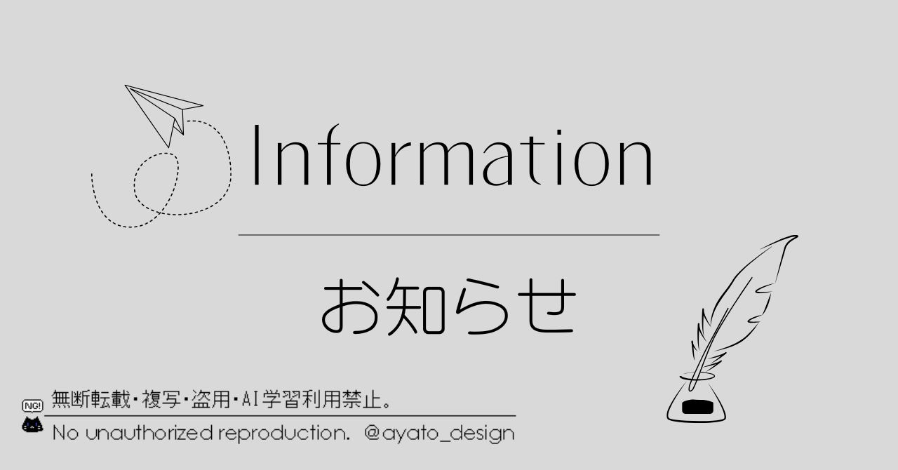
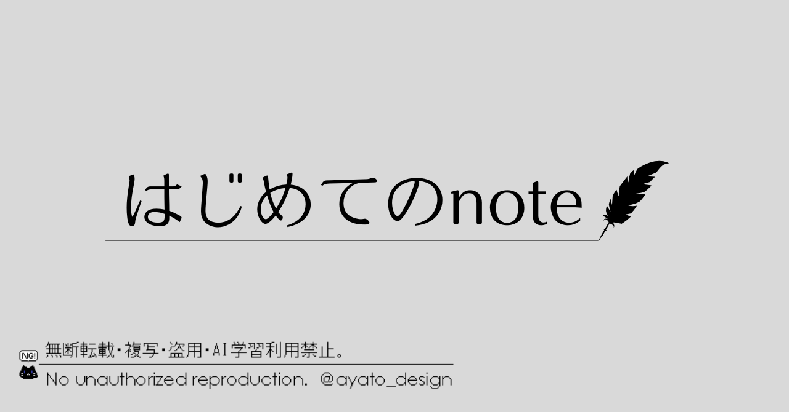
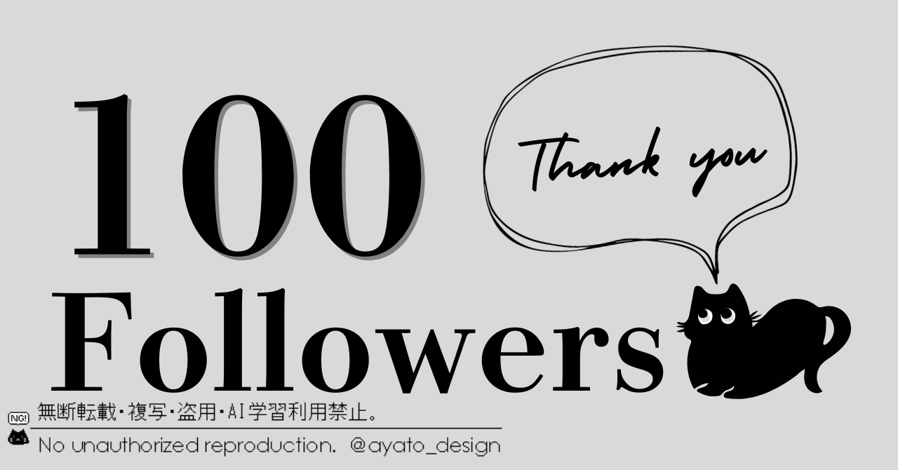
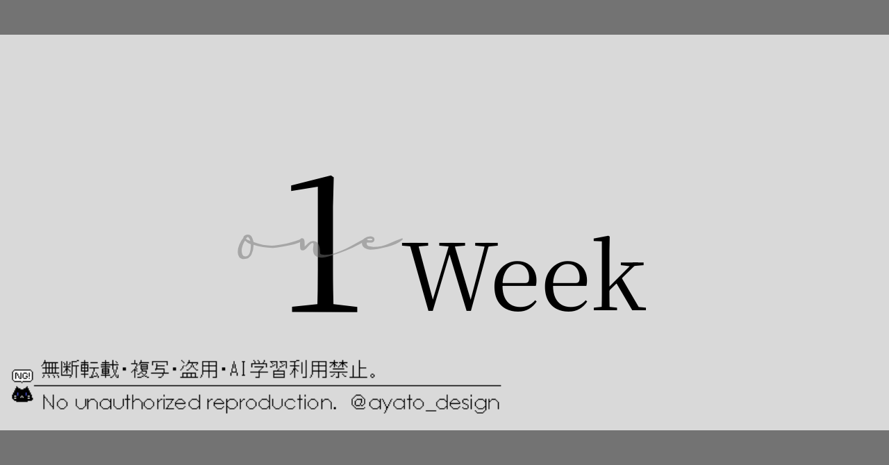
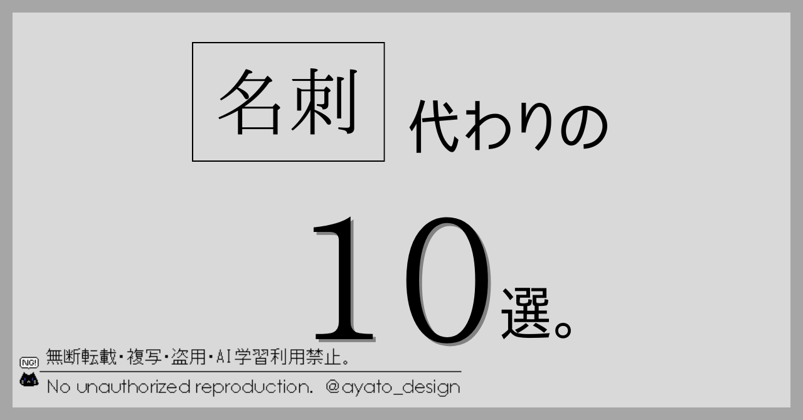
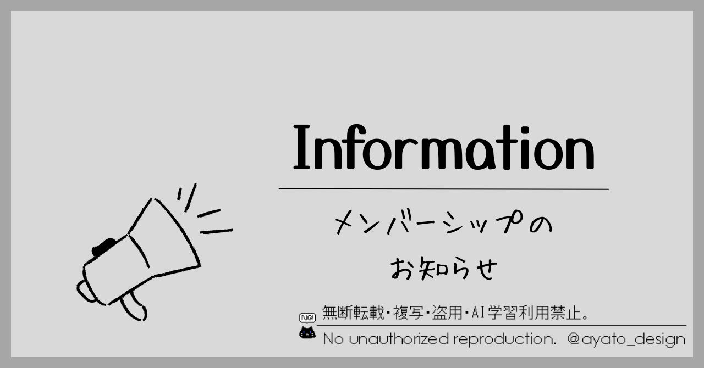
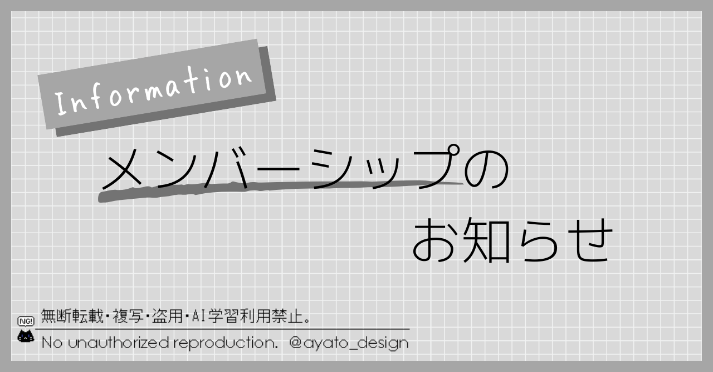
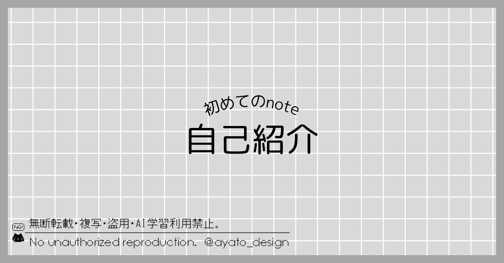
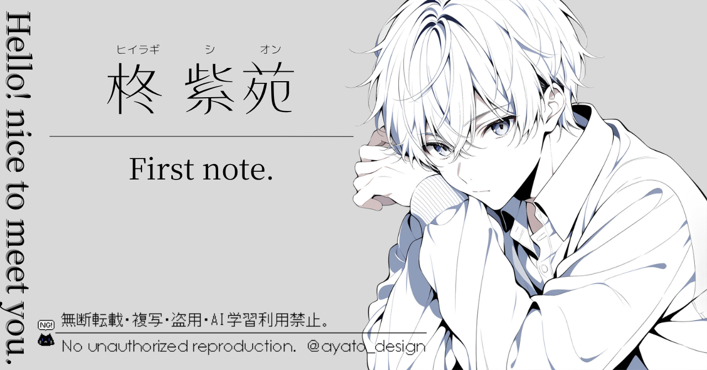

みんなのフォトギャラリー(※趣味製作)
Tag
Design
noteのみんなのフォトギャラリー用に製作した見出し画像。
今回は使って頂いた実際の画像を一部掲載。
一番最後はココナラで使用しているサンプル。
イラストはDays AIにて生成。
一目見てどんな記事か伝わるように意識をして制作しています。
2026年8月現在、165枚製作、使用回数410回突破。
制作時間：約20～30分
制作ツール：Canva
完成日：2025年2月～